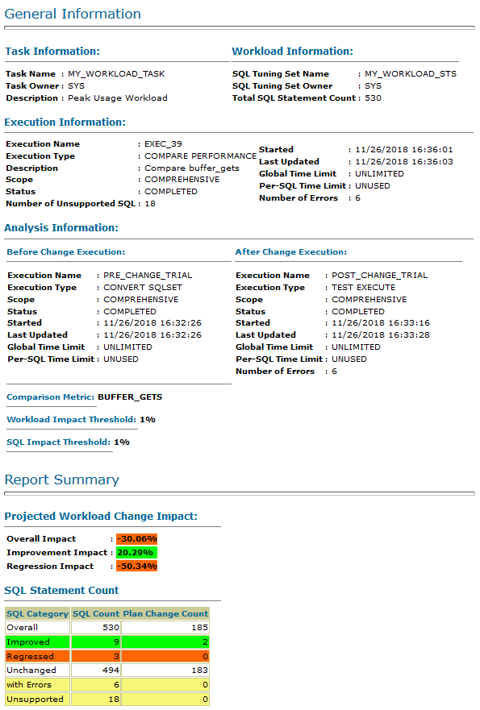

This 15-minute tutorial shows you how to create a SQL Performance Analyzer report, which compares SQL performance on two Oracle databases.
Background
You can use SQL Performance Analyzer to analyze and compare the performance of a SQL workload on two different Oracle databases. This procedure assumes that a SQL tuning set was created on one Oracle database and then transferred to another Oracle database. The SQL tuning set contains a SQL workload. Create a SQL Performance Analyzer task, and then populate it with two trials: a pre-change trial, which describes the performance of the workload on the original database, and a post-change trial, which describes the performance of the same workload on the current database.
What Do You Need?
An Oracle database
The SYSDBA administrative privilege
A SQL tuning set, which was created on another Oracle database and then transferred to the Oracle database used in this tutorial. This tutorial assumes that the SQL tuning set is named MY_WORKLOAD_STS.
Create a SQL Performance Analyzer Task
Use SQL*Plus to log in to the database as a user who has the SYSDBA administrative privilege.
$ sqlplus / as sysdba
Create SQL Performance Analyzer task MY_WORKLOAD_TASK. The task uses the SQL tuning set MY_WORKLOAD_STS, which was created on another database, and then transferred to the current database.
Create a post-change trial, which represents workload performance on the current database, by executing the SQL statements from SQL tuning set MY_WORKLOAD_STS.
Use SQL Performance Analyzer to analyze and compare the performance of the pre-change trial and the post-change trial. For a comparison metric, this report uses buffer_gets, which represents the number of times the database accessed a block.
Produce a SQL Performance Analyzer Report in HTML.
SQL> SET LONG 100000 LONGCHUNKSIZE 100000 LINESIZE 130 PAGESIZE 0 ECHO OFF SQL> spool my_workload_spa_report.html SQL> SELECT DBMS_SQLPA.REPORT_ANALYSIS_TASK('MY_WORKLOAD_TASK', 'html') FROM DUAL; SQL> spool off
Exit SQL*Plus.
SQL> exit
Open in an editor the file my_workload_spa_report.html. If the following is the first line in the file, remove it:
SQL> SELECT DBMS_SQLPA.REPORT_ANALYSIS_TASK('MY_WORKLOAD_TASK', 'html') FROM DUAL;
The first line of the file should be:
<html>
Save the file my_workload_spa_report.html.
Open my_workload_spa_report.html in a web browser. If you cannot open this file in a browser on the database host, transfer the file to a system on which you are able to open it in a browser.

Description of the illustration spa_report.png
 Create a SQL Performance Analyzer Report
Create a SQL Performance Analyzer Report Before You Begin
Before You Begin Create a SQL Performance Analyzer Task
Create a SQL Performance Analyzer Task Create a Pre-Change Trial and a Post-Change Trial
Create a Pre-Change Trial and a Post-Change Trial Create a SQL Performance Analyzer Report
Create a SQL Performance Analyzer Report